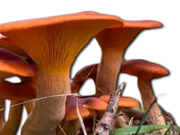
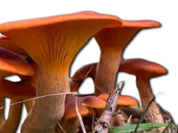

Descripción morfológica
Omphalotus olearius, conocido como "hongo linterna" o "seta de olivo", es un basidiomiceto bioluminiscente de la familia Marasmiaceae. Sus cuerpos fructíferos presentan sombreros convexos aplanados (5-15 cm de diámetro) con margen enrollado, de color naranja intenso a rojizo, más pálido hacia el borde. Las láminas son decurrentes, del mismo color que el sombrero y emiten una luminiscencia verde fantasma (520-530 nm) en la oscuridad. El pie (5-12 cm) es central o excéntrico, fibroso y del mismo color, aunque más claro en la base. La carne es amarillenta y despide un olor ligeramente dulce que recuerda a la madera húmeda.
Características distintivas
- Bioluminiscencia: Las láminas brillan intensamente en oscuridad total (visible hasta 2 metros).
- Coloración: Tonos naranja uniformes (sin escamas o manchas).
- Esporas: Elipsoidales, lisas, 5-7 × 3.5-5 µm, blancas en masa.
- Confusiones: Similar a Cantharellus cibarius (comestible, con láminas en forma de pliegues).
Distribución y hábitat
Especie mediterránea que crece en bosques de encinas (Quercus ilex) y olivos (Olea europaea), aunque también aparece bajo robles y castaños. Su distribución abarca el sur de Europa, norte de África y se ha introducido en California y Australia. Fructifica desde finales de verano hasta otoño, formando grupos densos en la base de árboles vivos o sobre tocones en descomposición. Prefiere suelos calcáreos (pH 7-8) y áreas con buena insolación, siendo frecuente en dehesas y olivares tradicionales.
Condiciones ecológicas
- Sustrato: Madera enterrada o raíces en descomposición.
- Temperatura: Óptimo entre 18-25°C para fructificación.
- Luminiscencia: Más intensa con humedad >80% y temperaturas >15°C.
Toxicidad y composición química
Contiene illudinas (sesquiterpenos) que provocan un síndrome gastrointestinal grave. Los síntomas (náuseas, vómitos, diarrea acuosa) aparecen 30 minutos a 2 horas post-ingesta y pueden durar 24-48 horas. Aunque raramente mortal, la deshidratación severa requiere hospitalización en el 15% de casos. La bioluminiscencia se debe a la enzima luciferasa que oxida el sustrato hispidina en presencia de oxígeno y ATP, siendo un 30% más intensa que en Panellus stipticus.
| Compuesto | Concentración | Efecto |
|---|---|---|
| Illudina M | 0.3-0.8 mg/g | Irritación gastrointestinal |
| Luciferasa | 1.2-2 U/mg proteína | Bioluminiscencia |
Identificación y precauciones
- Diferencias con rebozuelos: Láminas verdaderas (no pliegues), crecimiento en grupos densos.
- Prueba nocturna: Observar en oscuridad total para confirmar bioluminiscencia.
- Recomendaciones: No recolectar hongos naranjas cerca de olivos o encinas.
Investigación y aplicaciones
- Estudios con illudinas modificadas como agentes antitumorales (fase preclínica).
- Genes de luciferasa usados en biotecnología como marcadores celulares.
- Uso en educación ambiental para demostrar bioluminiscencia en hongos.
Historia y cultura
- Citado por Plinio el Viejo como "fungus oleaginus" por su asociación con olivos.
- En la Toscana se le llama "fungo dell'olivo", considerado símbolo de mala suerte.
- Su imagen aparece en frescos romanos de Pompeya como advertencia visual.